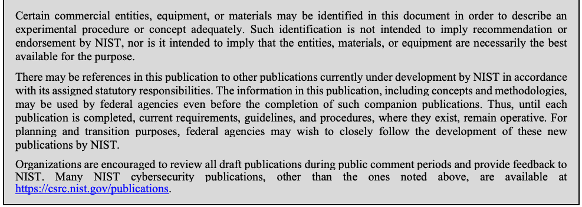
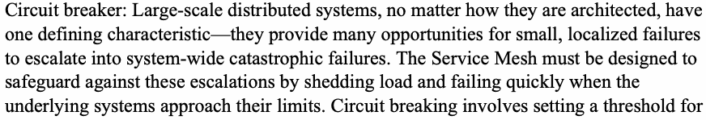
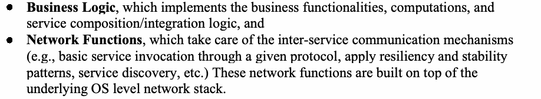
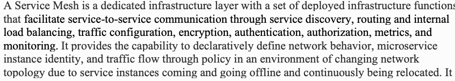
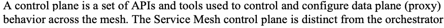
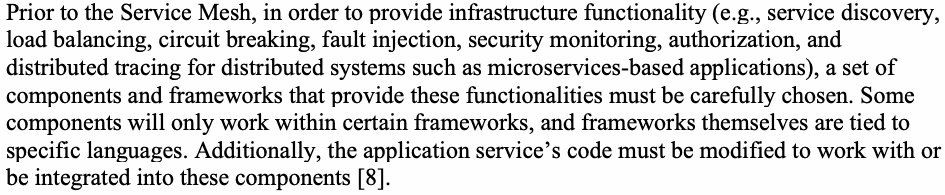
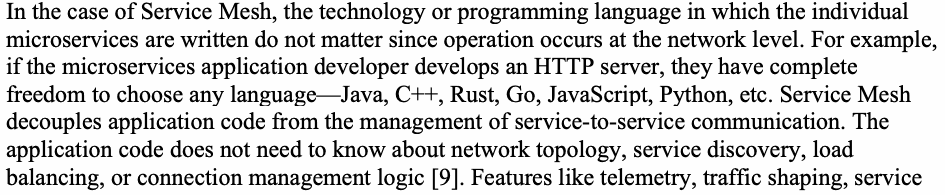
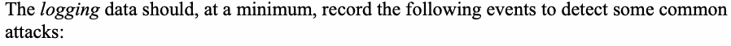
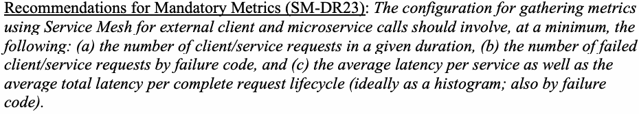
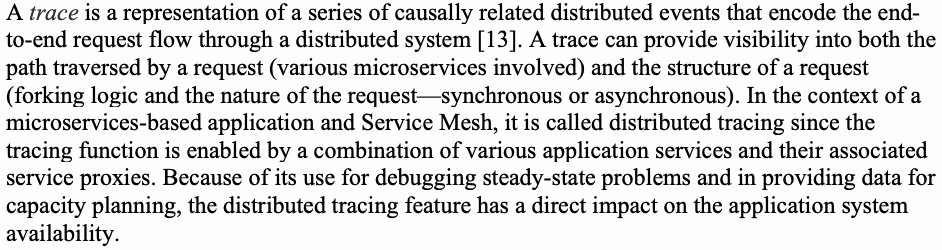

NIST Special Publication · PDF 原文抽出
Building Secure Microservices-based Applications Using Service-Mesh Architecture
サービスメッシュアーキテクチャを用いたセキュアなマイクロサービスベースアプリケーションの構築
NIST SP 800-204A（Building Secure Microservices-based Applications Using Service-Mesh Architecture）の英文と日本語訳を段落ごとに並べた閲覧用ページです。認証・認可、サービスディスカバリー、安全な通信、可用性、監視など、マイクロサービスのセキュリティ要件をサービスメッシュで実装するための導入指針を示します。 翻訳は非公式です。要件の確認にはNIST の正式版 PDFを参照してください。
PDF から抽出した原文は原本との照合待ちです。
NIST Special Publication 800-204A
NIST Special Publication 800-204A
Building Secure Microservices-based Applications Using Service-Mesh
サービスメッシュを用いたセキュアなマイクロサービスベースアプリケーションの構築
未レビュー訳Architecture
アーキテクチャ
未レビュー訳Ramaswamy Chandramouli
Ramaswamy Chandramouli
Zack Butcher
Zack Butcher
This publication is available free of charge from: https://doi.org/10.6028/NIST.SP.800-204A
本書は、以下より無料で入手可能である：https://doi.org/10.6028/NIST.SP.800-204A
C O M P U T E R S E C U R I T Y
コンピュータセキュリティ
NIST（米国国立標準技術研究所）のロゴ。「米国国立標準技術研究所」「米国商務省」の表記。
NIST Special Publication 800-204A
NIST Special Publication 800-204A
Building Secure Microservices-based Applications Using Service-Mesh
サービスメッシュを用いたセキュアなマイクロサービスベースアプリケーションの構築
未レビュー訳Architecture
アーキテクチャ
未レビュー訳Ramaswamy Chandramouli Computer Security Division Information Technology Laboratory
Ramaswamy Chandramouli コンピュータセキュリティ部門 情報技術研究所
Zack Butcher Tetrate San Francisco, CA
Zack Butcher Tetrate カリフォルニア州サンフランシスコ
This publication is available free of charge from: https://doi.org/10.6028/NIST.SP.800-204A
本書は、以下より無料で入手可能である：https://doi.org/10.6028/NIST.SP.800-204A
May 2020
2020年5月
米国商務省の紋章。外周に「米国商務省」「アメリカ合衆国」、中央にワシと帆船。
U.S. Department of Commerce Wilbur L. Ross, Jr., Secretary
米国商務省 ウィルバー・L・ロス・ジュニア長官
National Institute of Standards and Technology
米国国立標準技術研究所
Walter Copan, NIST Director and Under Secretary of Commerce for Standards and Technology
Walter Copan、NIST長官兼商務次官（標準・技術担当）
Authority
権限
This publication has been developed by NIST in accordance with its statutory responsibilities under the Federal Information Security Modernization Act (FISMA) of 2014, 44 U.S.C. § 3551 et seq., Public Law (P.L.) 113-283. NIST is responsible for developing information security standards and guidelines, including minimum requirements for federal information systems, but such standards and guidelines shall not apply to national security systems without the express approval of appropriate federal officials exercising policy authority over such systems. This guideline is consistent with the requirements of the Office of Management and Budget (OMB) Circular A-130.
本書は、2014年連邦情報セキュリティ近代化法（FISMA）、合衆国法典第44編第3551条以下、公法（P.L.）113-283に基づく法定責任に従ってNISTにより策定された。NISTは、連邦情報システムの最小限の要件を含む情報セキュリティ標準およびガイドラインを策定する責任を負っているが、そのような標準およびガイドラインは、当該システムに対して方針上の権限を行使する適切な連邦政府職員の明示的な承認なしに国家安全保障システムに適用されてはならない。本書は、行政管理予算局（OMB）サーキュラーA-130の要件に準拠している。
Nothing in this publication should be taken to contradict the standards and guidelines made mandatory and binding on federal agencies by the Secretary of Commerce under statutory authority. Nor should these guidelines be interpreted as altering or superseding the existing authorities of the Secretary of Commerce, Director of the OMB, or any other federal official. This publication may be used by nongovernmental organizations on a voluntary basis and is not subject to copyright in the United States. Attribution would, however, be appreciated by NIST.
本書のいかなる記述も、商務長官が法定権限に基づき連邦機関に対して義務的かつ拘束力を持つものとした標準およびガイドラインと矛盾するものと解釈されるべきではない。また、これらのガイドラインは、商務長官、OMB長官、またはその他の連邦政府職員の既存の権限を変更する、またはそれに取って代わるものと解釈されるべきでもない。本書は、非政府組織が任意で使用することができ、米国内において著作権の対象ではない。ただし、出典を明記していただければNISTとしては幸いである。
National Institute of Standards and Technology Special Publication 800-204A Natl. Inst. Stand. Technol. Spec. Publ. 800-204A, 27 pages (May 2020) CODEN: NSPUE2
米国国立標準技術研究所 特別刊行物 800-204A Natl. Inst. Stand. Technol. Spec. Publ. 800-204A, 27 ページ (2020年5月) CODEN: NSPUE2
This publication is available free of charge from: https://doi.org/10.6028/NIST.SP.800-204A
本書は、以下より無料で入手可能である：https://doi.org/10.6028/NIST.SP.800-204A
原本PDFの抜粋画像

Comments on this publication may be submitted to:
本書へのコメントは、以下に提出することができる：
National Institute of Standards and Technology Attn: Computer Security Division, Information Technology Laboratory 100 Bureau Drive (Mail Stop 8930) Gaithersburg, MD 20899-8930 Email: sp800-204a-comments@nist.gov
National Institute of Standards and Technology Attn: Computer Security Division, Information Technology Laboratory 100 Bureau Drive (Mail Stop 8930) Gaithersburg, MD 20899-8930 Email: sp800-204a-comments@nist.gov
All comments are subject to release under the Freedom of Information Act (FOIA).
すべてのコメントは、情報公開法（FOIA）に基づく公開の対象となる。
Reports on Computer Systems Technology
コンピュータシステム技術に関するレポート
The Information Technology Laboratory (ITL) at the National Institute of Standards and Technology (NIST) promotes the U.S. economy and public welfare by providing technical leadership for the Nation’s measurement and standards infrastructure. ITL develops tests, test methods, reference data, proof of concept implementations, and technical analyses to advance the development and productive use of information technology. ITL’s responsibilities include the development of management, administrative, technical, and physical standards and guidelines for the cost-effective security and privacy of other than national security-related information in Federal information systems. The Special Publication 800-series reports on ITL’s research, guidelines, and outreach efforts in information system security, and its collaborative activities with industry, government, and academic organizations.
米国国立標準技術研究所（NIST）の情報技術研究所（ITL）は、国家の計測および標準に関する基盤に対して技術的リーダーシップを提供することにより、米国の経済および公共の福祉を促進している。ITLは、情報技術の開発と生産的な利用を促進するために、テスト、テスト方法、参照データ、概念実証の実装、および技術分析を開発している。ITLの責務には、連邦情報システムにおける国家安全保障関連以外の情報について、費用対効果の高いセキュリティおよびプライバシーを確保するための、管理的、事務的、技術的、および物理的な標準およびガイドラインの策定が含まれる。Special Publication 800シリーズは、情報システムセキュリティにおけるITLの研究、ガイドライン、およびアウトリーチ活動、ならびに産業界、政府機関、および学術機関との共同活動について報告するものである。
Abstract
概要
The increasing trend in building microservices-based applications calls for addressing security in all aspects of service-to-service interactions due to their unique characteristics. The distributed cross-domain nature of microservices needs secure token service (STS), key management and encryption services for authentication and authorization, and secure communication protocols. The ephemeral nature of clustered containers (by which microservices are implemented) calls for secure service discovery. The availability requirement calls for: (a) resiliency techniques, such as load balancing, circuit breaking, and throttling, and (b) continuous monitoring (for the health of the service). The service mesh is the best-known approach that can facilitate specification of these requirements at a level of abstraction such that it can be uniformly and consistently defined while also being effectively implemented without making changes to individual microservice code. The purpose of this document is to provide deployment guidance for proxy-based Service Mesh components that collectively form a robust security infrastructure for supporting microservices-based applications.
マイクロサービスベースのアプリケーションを構築する傾向が強まっており、その固有の特性ゆえに、サービス間インタラクションのあらゆる側面においてセキュリティに対処することが求められている。マイクロサービスの分散型でドメイン横断的な性質は、認証および認可のためのセキュアトークンサービス（STS）、鍵管理、および暗号化サービス、ならびにセキュアな通信プロトコルを必要とする。（マイクロサービスを実装する手段である）クラスタ化されたコンテナの一時的な性質は、セキュアなサービスディスカバリを必要とする。可用性の要件は、(a) ロードバランシング、サーキットブレーキング、スロットリングなどのレジリエンス技術、および (b) （サービスの健全性のための）継続的モニタリングを必要とする。サービスメッシュは、これらの要件を、個々のマイクロサービスのコードに変更を加えることなく効果的に実装でき、かつ一様で一貫した形で定義できるような抽象化レベルで仕様化することを容易にする、最もよく知られたアプローチである。本文書の目的は、マイクロサービスベースのアプリケーションを支える堅牢なセキュリティ基盤を全体として形成する、プロキシベースのサービスメッシュコンポーネントの導入ガイダンスを提供することである。
Keywords
キーワード
API gateway; Application Programming Interface (API); circuit breaker; load balancing; microservices; Service Mesh; service proxy.
APIゲートウェイ；アプリケーションプログラミングインタフェース（API）；サーキットブレーカー；ロードバランシング；マイクロサービス；サービスメッシュ；サービスプロキシ。
Acknowledgements
謝辞
The authors like to express their sincere thanks to Brandon Lum, Senior Software Engineer at IBM Thomas J. Watson Research Center for his extensive, insightful feedback. They also express thanks to Isabel Van Wyk of G2-Inc and Tia Louden of Tetrate Inc. for their detailed editorial review.
著者らは、広範かつ洞察に満ちたフィードバックを提供してくれたIBM Thomas J. Watson Research CenterのシニアソフトウェアエンジニアであるBrandon Lum氏に心から感謝の意を表する。また、詳細な編集レビューを行ってくれたG2-IncのIsabel Van Wyk氏およびTetrate Inc.のTia Louden氏にも感謝の意を表する。
Patent Disclosure Notice
特許開示に関する通知
NOTICE: The Information Technology Laboratory (ITL) has requested that holders of patent claims whose use may be required for compliance with the guidance or requirements of this publication disclose such patent claims to ITL. However, holders of patents are not obligated to respond to ITL calls for patents and ITL has not undertaken a patent search in order to identify which, if any, patents may apply to this publication.
通知：情報技術研究所（ITL）は、本刊行物のガイダンスまたは要件に準拠するためにその使用が必要となる可能性のある特許請求の範囲の保有者に対し、そのような特許請求の範囲をITLに開示するよう要請している。ただし、特許の保有者にはITLによる特許の募集に応じる義務はなく、ITLは、本刊行物に適用され得る特許がある場合にそれがどの特許であるかを特定するための特許調査を行っていない。
As of the date of publication and following call(s) for the identification of patent claims whose use may be required for compliance with the guidance or requirements of this publication, no such patent claims have been identified to ITL.
刊行日現在、本刊行物のガイダンスまたは要件への準拠にその使用が必要となる可能性のある特許請求の範囲の特定を求める募集を行った後においても、そのような特許請求の範囲はITLに対して特定されていない。
No representation is made or implied by ITL that licenses are not required to avoid patent infringement in the use of this publication.
本刊行物の使用において特許侵害を回避するためにライセンスが不要であるという表明を、ITLは明示的にも黙示的にも行っていない。
Executive Summary
エグゼクティブサマリー
Microservices-based application architectures are becoming the norm for building cloud-based and large enterprise applications because of their inherent scalability, agility of deployment, and availability of tools. At the same time, the characteristics of microservices-based applications bring with them modified/enhanced security requirements.
マイクロサービスベースのアプリケーションアーキテクチャは、その固有のスケーラビリティ、デプロイの俊敏性、ツールの利用可能性により、クラウドベースおよび大規模エンタープライズアプリケーションを構築するための標準となりつつある。同時に、マイクロサービスベースのアプリケーションの特性は、修正・強化されたセキュリティ要件をもたらす。
A few examples of these characteristics and their security impacts include:
これらの特性およびそれらがセキュリティに与える影響の例としては、以下のようなものが挙げられる。
a. The sheer number of microservices results in more interconnections and more communication links to be protected.
a. マイクロサービスの数が膨大であるため、保護すべき相互接続および通信リンクが増加する。
b. The ephemeral nature of microservices calls for secure service discovery mechanisms.
b. マイクロサービスのエフェメラル（短命）な性質により、セキュアなサービス検出メカニズムが求められる。
c. The fine-grained nature of microservices calls for the ability to support fine-grained authorization policies.
c. マイクロサービスのきめ細かな性質により、きめ細かな認可ポリシーをサポートする能力が求められる。
The supporting services (e.g., authentication/authorization, security monitoring, etc.) for a microservices-based application must be tightly coordinated through a dedicated infrastructure, such as the Service Mesh. There are multiple ways of deploying the components of the Service Mesh, including embedding them in the application (microservice) code, coupling them to the application code by implementing them as libraries, or implementing them as service proxies that are independent of application code. This last deployment approach has been found to be the most efficient in terms of scalability and flexibility in many scenarios for implementing the supporting infrastructure for microservices-based applications.
マイクロサービスベースのアプリケーションの支援サービス（例：認証/認可、セキュリティ監視など）は、サービスメッシュなどの専用インフラストラクチャを通じて緊密に連携させなければならない。サービスメッシュのコンポーネントをデプロイする方法は複数あり、アプリケーション（マイクロサービス）コードへの組み込み、ライブラリとして実装することによるアプリケーションコードとの結合、アプリケーションコードから独立したサービスプロキシとしての実装などがある。この最後のデプロイアプローチは、マイクロサービスベースのアプリケーションの支援インフラストラクチャを実装する多くのシナリオにおいて、スケーラビリティと柔軟性の観点から最も効率的であることが分かっている。
The purpose of this document is to provide deployment guidance for service mesh components in the service proxy-based approach. The Service Mesh deployment recommendations span the following aspects:
本文書の目的は、サービスプロキシベースのアプローチにおけるサービスメッシュコンポーネントのデプロイガイダンスを提供することである。サービスメッシュのデプロイに関する推奨事項は、以下の側面にわたる。
•Configuration for communication between service proxies
•サービスプロキシ間の通信のための構成
•Configuration for ingress proxies
•イングレスプロキシのための構成
•Configuration for access to external services
•外部サービスへのアクセスのための構成
•Configuration for identity and access management
•アイデンティティおよびアクセス管理のための構成
•Configuration for monitoring capabilities
•監視機能のための構成
•Configuration for network resilience
•ネットワークレジリエンスのための構成
•Configuration for cross-origin resource sharing (CORS)
•クロスオリジンリソース共有（CORS）のための構成
•Configuration of Permissions for Administrative Operations
•管理操作に対する権限の構成
Table of Contents
目次
Executive Summary
エグゼクティブサマリー
v
1 Introduction
1 はじめに
1
1.1 Why Service Mesh
1.1 なぜサービスメッシュなのか
1
1.2 Scope
1.2 適用範囲
2
1.3 Target Audience
1.3 対象読者
2
1.4 Relationship to other NIST Guidance Documents
1.4 他のNISTガイダンス文書との関係
2
1.5 Organization of this Document
1.5 本文書の構成
2
2 Microservices-based Application – Background and Security Requirements
2 マイクロサービスベースのアプリケーション – 背景およびセキュリティ要件
4
2.1 Authentication and Authorization Requirements
2.1 認証および認可要件
4
2.2 Service Discovery
2.2 サービス検出
4
2.3 Improving Availability through Network Resilience Techniques
2.3 ネットワークレジリエンス技術を通じた可用性の向上
4
2.4 Application Monitoring Requirement
2.4 アプリケーション監視の要件
5
3 Service Mesh – Definitions and Technology Background
3 サービスメッシュ – 定義および技術的背景
6
3.1 Service Mesh Components & Capabilities
3.1 サービスメッシュのコンポーネントおよび機能
7
3.1.1 Ingress Controller
3.1.1 Ingressコントローラー
8
3.1.2 Egress Controller
3.1.2 Egressコントローラー
8
3.2 Service Mesh as Communication Middleware: What is Different
3.2 通信ミドルウェアとしてのサービスメッシュ：何が異なるのか
9
3.3 Service Mesh: State of the Art
3.3 サービスメッシュ：最新技術動向
10
4 Service Mesh Deployment Recommendations
4 サービスメッシュ導入に関する推奨事項
11
4.1 Communication Configuration for Service Proxies
4.1 サービスプロキシの通信設定
11
4.2 Configuration for Ingress Proxies
4.2 Ingressプロキシの設定
12
4.3 Configuration for Access to External Services
4.3 外部サービスへのアクセス設定
12
4.4 Configuration for Identity and Access Management
4.4 アイデンティティおよびアクセス管理のための構成
12
4.5 Configuration for Monitoring Capabilities
4.5 モニタリング機能の設定
14
4.6 Configuration for Network Resilience Techniques
4.6 ネットワークレジリエンス技術の設定
16
4.7 Configuration for Cross-Origin Resource Sharing (CORS)
4.7 オリジン間リソース共有（CORS）の設定
16
4.8 Configuration of Permissions for Administrative Operations
4.8 管理操作に対するアクセス許可の設定
16
5 Summary and Conclusions
5 要約および結論
17
References
参考文献
18
1 Introduction
1 はじめに
Microservices architecture has become an established approach for building enterprise and cloud-based applications due to the following:
マイクロサービスアーキテクチャは、以下の理由により、エンタープライズアプリケーションおよびクラウドベースのアプリケーションを構築するための確立されたアプローチとなっている。
•Agility – The loose coupling and increased modularity of microservices have enabled independent and quicker modification and deployment without affecting other components (microservices) of a microservices-based application.
•アジリティ – マイクロサービスの疎結合性とモジュール性の向上により、マイクロサービスベースのアプリケーションの他のコンポーネント（マイクロサービス）に影響を与えることなく、独立した、より迅速な変更およびデプロイが可能になった。
•Scalability – The characteristics of the microservices allow them to be independently scaled.
•スケーラビリティ – マイクロサービスの特性により、マイクロサービスを独立してスケーリングできる。
•Usability – The use of well-defined application programming interfaces (APIs) makes integration or onboarding of various microservices easier.
•ユーザビリティ – 明確に定義されたアプリケーションプログラミングインタフェース（API）を使用することで、さまざまなマイクロサービスの統合やオンボーディングが容易になる。
•Availability of tools – The increasing availability of automation tools facilitate error-free configuration and deployment.
•ツールの利用可能性 – 自動化ツールがますます利用可能になっていることで、エラーのない構成とデプロイが容易になる。
In spite of the above advantages, the architecture of microservices-based applications has some challenges with modified/enhanced security requirements, such as:
上記のような利点があるにもかかわらず、マイクロサービスベースのアプリケーションのアーキテクチャには、以下のように変更または強化されたセキュリティ要件に関するいくつかの課題がある。
•More microservices lead to more interconnections between these components as well as more communication links to be protected.
•マイクロサービスが増加すると、これらのコンポーネント間の相互接続が増えるだけでなく、保護すべき通信リンクも増加する。
•Components (microservices) can come and go dynamically, so the environment needs secure service discovery requirements.
•コンポーネント（マイクロサービス）は動的に現れたり消えたりするため、環境にはセキュアなサービスディスカバリ要件が必要となる。
•There is no concept of a network perimeter.
•ネットワーク境界という概念は存在しない。
•All microservices must be treated as non-trustworthy.
•すべてのマイクロサービスは信頼できないものとして扱われなければならない。
•The fine-grained nature of microservices requires fine-grained authorizations at each microservice. However, this may require security policies to be centrally defined and the configurations reflecting them to be defined in each microservice to enable uniform, consistent enforcement across all microservices.
•マイクロサービスのきめ細かな性質は、各マイクロサービスにおけるきめ細かな認可を必要とする。しかし、すべてのマイクロサービスにわたって均一で一貫した適用を可能にするには、セキュリティポリシーを一元的に定義し、それらを反映した設定を各マイクロサービスで定義することが必要となる場合がある。
1.1 Why Service Mesh
1.1 なぜサービスメッシュなのか
Due to the security requirements for microservices-based applications stated above, the infrastructure that supports the application and that infrastructure’s associated services (e.g., security) should be tightly coordinated. One such dedicated infrastructure is the Service Mesh. The code that implements the Service Mesh can be organized in the following ways with respect to the components of a microservices-based application architecture (Each architectural pattern is denoted using the acronym SM-ARx where SM stands for Service Mesh, AR stands for architecture and x is the sequence number):
上述したマイクロサービスベースのアプリケーションに対するセキュリティ要件により、アプリケーションをサポートするインフラストラクチャと、そのインフラストラクチャに関連するサービス（例：セキュリティ）は緊密に連携されるべきである。そのような専用インフラストラクチャの1つがサービスメッシュである。サービスメッシュを実装するコードは、マイクロサービスベースのアプリケーションアーキテクチャのコンポーネントに関して、以下のような方法で構成することができる（各アーキテクチャパターンは頭字語SM-ARxを用いて表される。ここで、SMはService Mesh、ARはarchitectureを表し、xは一連番号である）：
•SM-AR1: Service Mesh code can be embedded in the microservices application code, making the Service Mesh an integral part of the application development framework.
•SM-AR1: サービスメッシュのコードはマイクロサービスのアプリケーションコードに埋め込むことができ、それによってサービスメッシュはアプリケーション開発フレームワークの不可欠な一部となる。
•SM-AR2: Service Mesh code implemented as libraries and, therefore, applications are coupled to the services provided by the Service Mesh via API calls.
•SM-AR2: サービスメッシュのコードはライブラリとして実装され、したがって、アプリケーションはAPI呼び出しを介してサービスメッシュによって提供されるサービスに結合される。
•SM-AR3: Service Mesh functions are implemented in proxies with each proxy deployed in front of a microservice instance and collectively providing infrastructure services for the microservices-based application. These proxies are called “side-car proxies” and can be implemented and operated independently of the application code. Side-car proxies enable heterogeneous platforms (different languages and application development frameworks) to be controlled consistently by adopting the lowest common denominator API—the network.
•SM-AR3: サービスメッシュの機能はプロキシ内に実装され、各プロキシがマイクロサービスインスタンスの前面にデプロイされて、総体としてマイクロサービスベースのアプリケーションにインフラストラクチャサービスを提供する。これらのプロキシは「サイドカープロキシ」と呼ばれ、アプリケーションコードから独立して実装および運用することができる。サイドカープロキシは、最小公約数的なAPIであるネットワークを採用することにより、異種プラットフォーム（異なる言語およびアプリケーション開発フレームワーク）を一貫して制御できるようにする。
•SM-AR4: Service Mesh functions are implemented in proxies with a proxy deployed per node (physical host) rather than per microservice instance (such as SM-AR3).
•SM-AR4: サービスメッシュ機能はプロキシ内に実装され、（SM-AR3などのように）マイクロサービスインスタンスごとではなく、ノード（物理ホスト）ごとにプロキシがデプロイされる。
1.2 Scope
1.2 対象範囲
For the purpose of this document, the only Service Mesh architecture that will be considered will be SM-AR3, where a dedicated infrastructure layer provides all security functionality to the microservices-based application without any modification to the application service’s code. Compared to SM-AR4, SM-AR3 avoids a range of privilege escalation and noisy neighbor problems by deploying one instance of the service proxy per microservice instance and relying on the underlying platform’s isolation guarantees to ensure the application’s traffic is only mediated by its dedicated service proxy. Compared to SM-AR1 and SM-AR2, SM-AR3 decouples the application lifecycle from the modules that provide the service mesh functionality and avoids the combinatorial explosion of having to maintain the multiple versions of the library across languages, which could potentially happen in SM-AR2. Based on this context, the primary function of Service Mesh from the perspective of this document is to mediate and broker client-to-microservice and microservice-to-microservice communications where the mediating and brokering agents or functional modules do not have tight coupling with the microservice’s code.
本文書の目的において、検討対象とするサービスメッシュアーキテクチャはSM-AR3のみであり、このアーキテクチャでは、専用のインフラストラクチャ層が、アプリケーションサービスのコードに一切の変更を加えることなく、マイクロサービスベースのアプリケーションにすべてのセキュリティ機能を提供する。SM-AR4と比較して、SM-AR3は、マイクロサービスインスタンスごとにサービスプロキシのインスタンスを1つデプロイし、基盤となるプラットフォームの分離保証に依拠してアプリケーションのトラフィックがその専用サービスプロキシによってのみ調停されるようにすることで、一連の特権昇格やノイジーネイバー（騒がしい隣人）問題を回避する。SM-AR1およびSM-AR2と比較して、SM-AR3はアプリケーションのライフサイクルをサービスメッシュ機能を提供するモジュールから切り離し、言語間でライブラリの複数バージョンを保守しなければならないという、SM-AR2で発生する可能性のある組み合わせ爆発を回避する。この文脈に基づき、本文書の観点からのサービスメッシュの主要な機能は、調停および仲介を行うエージェントまたは機能モジュールがマイクロサービスのコードと密結合を持たない状態で、クライアントとマイクロサービス間、およびマイクロサービス間の通信を調停および仲介することである。
1.3 Target Audience
1.3 想定読者
The target audience of the guidance document for supporting microservices-based applications using the Service Mesh framework includes security solutions architects who want to design a security framework for microservices-based applications and system integrators who build a common infrastructure services framework for different microservices-based applications residing in the enterprise and the cloud.
サービスメッシュフレームワークを使用したマイクロサービスベースのアプリケーションをサポートするための本ガイダンス文書の想定読者には、マイクロサービスベースのアプリケーション向けのセキュリティフレームワークの設計を希望するセキュリティソリューションアーキテクトや、エンタープライズおよびクラウドに存在する様々なマイクロサービスベースのアプリケーション向けに共通インフラストラクチャサービスフレームワークを構築するシステムインテグレーターが含まれる。
1.4 Relationship to other NIST Guidance Documents
1.4 他のNISTガイダンス文書との関係
This guidance document focuses on building a specific security framework or infrastructure for microservices-based applications. Understanding the characteristics of microservices-based applications and their overall security requirements and strategies is beneficial, and information is provided in the NIST Special Publication (SP) 800-204, Security Strategies for Microservices-based Application Systems [1].
本ガイダンス文書は、マイクロサービスベースのアプリケーション向けの特定のセキュリティフレームワークまたはインフラストラクチャの構築に焦点を当てている。マイクロサービスベースのアプリケーションの特性、ならびにそれらの全体的なセキュリティ要件および戦略を理解することは有益であり、その情報はNIST Special Publication (SP) 800-204『Security Strategies for Microservices-based Application Systems』[1] で提供されている。
1.5 Organization of this Document
1.5 本書の構成
The organization of this document is as follows:
本書の構成は以下の通りである。
•Chapter 2 recaps the security requirements for microservices-based applications by referencing those that were discussed in [1].
•第2章では、[1] で議論されたセキュリティ要件を参照することにより、マイクロサービスベースのアプリケーションにおけるセキュリティ要件を要約する。
•Chapter 3 introduces Service Mesh and provides a brief description of its components, capabilities, and unique role as a communication middleware for microservices-based applications.
•第3章では、サービスメッシュを紹介し、そのコンポーネント、機能、およびマイクロサービスベースのアプリケーション向け通信ミドルウェアとしての独自の役割について簡単に説明する。
•Chapter 4 provides detailed deployment recommendations for Service Mesh components spanning configuration areas such as service proxies, ingress proxies, egress proxies, identity and access management, monitoring capabilities, network resilience techniques, and cross-origin resource sharing.
•第4章では、サービスプロキシ、イングレスプロキシ、エグレスプロキシ、アイデンティティおよびアクセス管理、監視機能、ネットワークレジリエンス技術、クロスオリジンリソース共有などの構成領域にわたる、サービスメッシュコンポーネントの詳細なデプロイ推奨事項を提供する。
•Chapter 5 provides the summary and conclusions.
•第5章では、要約と結論を提供する。
2 Microservices-based Application – Background and Security Requirements
2 マイクロサービスベースのアプリケーション – 背景およびセキュリティ要件
The definition and description of microservices-based application, threats, and security strategies for countering those threats are described in NIST SP 800-204, Security Strategies for Microservices-based Application Systems [1]. The purpose of this chapter is to recap and elaborate on the security requirements for this class of application to provide context for how those requirements are met by the functionality of the Service Mesh described in Chapter 3. This facilitates the development of deployment recommendations for Service Mesh components to meet those requirements in Chapter 4.
マイクロサービスベースのアプリケーションの定義と説明、脅威、およびそれらの脅威に対抗するためのセキュリティ戦略は、NIST SP 800-204『Security Strategies for Microservices-based Application Systems』[1] に記載されている。本章の目的は、この種のアプリケーションに対するセキュリティ要件を要約・詳述し、第3章で説明するサービスメッシュの機能によってそれらの要件がどのように満たされるかについての背景を提供することである。これにより、第4章においてそれらの要件を満たすためのサービスメッシュコンポーネントのデプロイ推奨事項の策定が容易になる。
2.1 Authentication and Authorization Requirements
2.1 認証および認可の要件
Authentication and access policy may vary depending on the type of APIs exposed by microservices—some may be public APIs, private APIs, or partner APIs, which are available only for business partners. There are multiple microservices, and the authentication policies should be defined to provide coverage for all of them. Further, certificate-based authentication requires a public key infrastructure (PKI) for certificate generation/management and key management. Further authorization modules covering resources in all microservices must be built to provide fine-grained authorization in all service requests.
認証およびアクセスポリシーは、マイクロサービスによって公開されるAPIのタイプによって異なる場合がある。一部は公開API、プライベートAPI、またはビジネスパートナーのみが利用可能なパートナーAPIである可能性がある。複数のマイクロサービスが存在し、認証ポリシーはそれらすべてをカバーするように定義されるべきである。さらに、証明書ベースの認証には、証明書の生成/管理および鍵管理のための公開鍵基盤（PKI）が必要である。さらに、すべてのサービスリクエストにおいてきめ細かな認可を提供するために、すべてのマイクロサービス内のリソースをカバーする認可モジュールを構築しなければならない。
2.2 Service Discovery
2.2 サービスディスカバリ
In legacy distributed systems, there are multiple services configured to operate at designated locations (IP address and port number). In the microservices-based application, the following scenario exists and calls for a robust service discovery mechanism:
従来の分散システムでは、指定された場所（IPアドレスおよびポート番号）で動作するように構成された複数のサービスが存在する。マイクロサービスベースのアプリケーションでは、次のようなシナリオが存在し、堅牢なサービスディスカバリメカニズムが求められる。
a) There are a substantial number of services and many instances associated with each service with dynamically changing locations.
a) かなりの数のサービスが存在し、各サービスには、場所が動的に変化する多数のインスタンスが関連付けられている。
b) Each of the microservices may be implemented in Virtual Machines (VMs) or as containers, which may be assigned dynamic IP addresses, especially when they are hosted in an Infrastructure as a Service (IAAS) or Software as a Service (SAAS) cloud service.
b) 各マイクロサービスは、仮想マシン（VM）内に、またはコンテナとして実装される場合があり、特にInfrastructure as a Service（IAAS）またはSoftware as a Service（SAAS）クラウドサービスでホストされている場合、これらには動的IPアドレスが割り当てられる可能性がある。
c) The number of instances associated with a service can vary based on the load fluctuations using features such as autoscaling.
c) サービスに関連付けられるインスタンスの数は、オートスケーリングなどの機能を使用して、負荷の変動に基づいて変化し得る。
Based on the above characteristics, a feature to discover a service while making a service request is an essential requirement. A common approach to implementing this feature is the use of a service registry. A service registry consists of a directory where new service instances created for the microservices-based application register themselves while service instances going offline are deleted from it.
上記の特徴に基づき、サービスリクエストを行う際にサービスを発見する機能は不可欠な要件である。この機能を実装するための一般的なアプローチは、サービスレジストリの使用である。サービスレジストリは、マイクロサービスベースのアプリケーション用に作成された新しいサービスインスタンスが自身を登録し、オフラインになるサービスインスタンスがそこから削除されるディレクトリで構成される。
2.3 Improving Availability through Network Resilience Techniques
2.3 ネットワークレジリエンス技術による可用性の向上
•Load balancing: There is a need to have multiple instances of the same service, and the loads on these instances must be evenly distributed to avoid delayed responses or service crashes due to overload.
•負荷分散：同一サービスの複数のインスタンスを用意する必要があり、過負荷による応答の遅延やサービスのクラッシュを回避するために、これらのインスタンスへの負荷を均等に分散しなければならない。
•Circuit breaker: Large-scale distributed systems, no matter how they are architected, have one defining characteristic—they provide many opportunities for small, localized failures to escalate into system-wide catastrophic failures. The Service Mesh must be designed to safeguard against these escalations by shedding load and failing quickly when the underlying systems approach their limits. Circuit breaking involves setting a threshold for the failed responses from an instance of a microservice and cutting off forwarding requests to that instance when the failure is above the threshold (e.g., when the circuit breaker trips). This mitigates the possibility of cascading failure and allows for time to analyze logs, implement the necessary fix, and push an update for the failing instance. Thus, circuit breaking is a temporary measure that prevents total disruption to responses for service requests. The service requests will be restored to the instance once the service is responsive.
原本PDFの抜粋画像

•サーキットブレーカー：大規模な分散システムは、どのように設計されているかに関わらず、1つの決定的な特性を持っている。それは、小さく局所的な障害がシステム全体の壊滅的な障害へとエスカレートする機会を数多く与えるということである。サービスメッシュは、基盤となるシステムが限界に近づいた際に、負荷を切り捨て、速やかに失敗させることによって、こうしたエスカレーションを防ぐように設計されなければならない。サーキットブレイクでは、マイクロサービスのインスタンスからの失敗応答に対してしきい値を設定し、失敗がそのしきい値を超えた場合（例：サーキットブレーカーがトリップした場合）に、そのインスタンスへのリクエストの転送を遮断する。これにより、連鎖的な障害の可能性が緩和され、ログを分析し、必要な修正を実施し、障害が発生しているインスタンスに対するアップデートをプッシュするための時間を確保できる。したがって、サーキットブレイクは、サービスリクエストに対する応答の全面的な途絶を防ぐ一時的な措置である。サービスが応答可能になり次第、そのインスタンスへのサービスリクエストは復旧される。
•Rate limiting (throttling): The rate of requests coming into a microservice must be limited to ensure continued availability of service for all clients.
•レート制限（スロットリング）：すべてのクライアントに対するサービスの継続的な可用性を確保するために、マイクロサービスに着信するリクエストのレートは制限されなければならない。
•Blue/green deployments: When a new version of a microservice is deployed, requests from customers using the old version can be redirected to the new version using the API gateway that can be programmed to maintain awareness of the locations of both versions.
•ブルー/グリーンデプロイメント：マイクロサービスの新しいバージョンがデプロイされた際、両方のバージョンの場所を把握し続けるようにプログラムできるAPIゲートウェイを使用して、古いバージョンを使用している顧客からのリクエストを新しいバージョンへとリダイレクトできる。
•Canary releases: Only a limited amount of traffic is initially sent to a new version of a microservice since the correctness of its response or performance metric under all operating scenarios is not fully known. Once sufficient data is gathered about its operating characteristics, then all of the requests can be proxied to the new version of the microservice.
•カナリアリリース：すべての運用シナリオにおける応答の正確性やパフォーマンス指標が完全には判明していないため、マイクロサービスの新しいバージョンには、最初は限定された量のトラフィックのみが送信される。その動作特性に関する十分なデータが収集された後は、すべてのリクエストをマイクロサービスの新しいバージョンにプロキシできる。
2.4 Application Monitoring Requirement
2.4 アプリケーション監視要件
To detect attacks and identify factors for degradation of services (which may impact availability), it is necessary to monitor network traffic into and out of microservices through distributed logging, generation of metrics, performance of analytics, and tracing.
攻撃を検知し、サービスの低下（可用性に影響を及ぼす可能性がある）の要因を特定するには、分散ロギング、メトリクスの生成、分析の実行、およびトレーシングを通じて、マイクロサービスに出入りするネットワークトラフィックを監視することが必要である。
3 Service Mesh – Definitions and Technology Background
3 サービスメッシュ – 定義および技術的背景
From the description of microservices in the previous chapter, it should be clear that a microservice has two broad functions [2]:
原本PDFの抜粋画像
前章におけるマイクロサービスの説明から明らかなはずであるが、マイクロサービスには大きく分けて2つの機能がある[2]：
•Business Logic, which implements the business functionalities, computations, and service composition/integration logic, and
原本PDFの抜粋画像

•ビジネスロジック：業務機能、計算処理、およびサービスの構成／統合ロジックを実装するもの、および
•Network Functions, which take care of the inter-service communication mechanisms (e.g., basic service invocation through a given protocol, apply resiliency and stability patterns, service discovery, etc.) These network functions are built on top of the underlying OS level network stack.
原本PDFの抜粋画像
•ネットワーク機能：サービス間通信メカニズム（例：所定のプロトコルによる基本的なサービス呼び出し、回復力および安定性パターンの適用、サービスディスカバリなど）を処理する。これらのネットワーク機能は、基盤となるOSレベルのネットワークスタックの上に構築される。
The business logic function must be an integral part of the microservice code since that service is the one that executes or supports a business process. The difficulty with the microservice directly performing the network functions is that it uses different libraries depending on the programming language it is written in or the development framework it is hosted on. With the practical reality of microservices being written in multiple languages (e.g., Java, JavaScript, Python, etc.) within the same application to optimize the development or runtime process, it becomes a tedious task to provide the communication capability for each service node.
ビジネスプロセスを実行またはサポートするのはそのサービス自身であるため、ビジネスロジック機能はマイクロサービスのコードの不可欠な部分でなければならない。マイクロサービスがネットワーク機能を直接実行する場合の難点は、マイクロサービスが、記述に用いられたプログラミング言語やホストされている開発フレームワークに応じて異なるライブラリを使用することである。開発またはランタイムのプロセスを最適化するために、同一アプリケーション内でマイクロサービスが複数の言語（例：Java、JavaScript、Pythonなど）で記述されるという実情の下では、各サービスノードに通信機能を提供することは煩雑な作業となる。
A Service Mesh is a dedicated infrastructure layer with a set of deployed infrastructure functions that facilitate service-to-service communication through service discovery, routing and internal load balancing, traffic configuration, encryption, authentication, authorization, metrics, and monitoring. It provides the capability to declaratively define network behavior, microservice instance identity, and traffic flow through policy in an environment of changing network topology due to service instances coming and going offline and continuously being relocated. It can be looked upon as a networking model that sits at a layer of abstraction above the transport layer of the Open Systems Interconnection (OSI) model (e.g., Transmission Control Protocol/Internet Protocol (TCP/IP)) and addresses the service’s session layer (Layer 5 of the OSI model) concerns. However, fine-grained authorization may still need to be performed at the microservice level since that is the only entity that has full knowledge of the business logic.
原本PDFの抜粋画像

サービスメッシュは、サービスディスカバリ、ルーティングおよび内部負荷分散、トラフィック設定、暗号化、認証、認可、メトリクス、監視を通じてサービス間通信を促進する、デプロイされた一連のインフラストラクチャ機能を備えた専用のインフラストラクチャ層である。サービスインスタンスがオンラインになったりオフラインになったりし、継続的に再配置されることでネットワークトポロジが変化する環境において、ネットワークの動作、マイクロサービスインスタンスのアイデンティティ、およびトラフィックフローをポリシーによって宣言的に定義する能力を提供する。これは、Open Systems Interconnection（OSI）モデルのトランスポート層（例：Transmission Control Protocol/Internet Protocol（TCP/IP））より上位の抽象化層に位置し、サービスのセッション層（OSIモデルの第5層）に関する関心事を扱うネットワーキングモデルと見なせる。ただし、ビジネスロジックを完全に把握している唯一のエンティティはマイクロサービスであるため、きめ細かな認可は依然としてマイクロサービスレベルで行う必要がある場合がある。
Alternatively, the Service Mesh can be defined as “a distributed computing middleware that optimizes communications between application services [3].” The service-to-service communication is most effectively enabled using a proxy (see Section 1.1). A Service Mesh is typically implemented as an array of lightweight network proxies that are deployed alongside application code without the application needing to be aware [4].
あるいは、サービスメッシュは「アプリケーションサービス間の通信を最適化する分散コンピューティングミドルウェア[3]」と定義することもできる。サービス間通信は、プロキシを使うことで最も効果的に実現される（セクション1.1参照）。サービスメッシュは通常、アプリケーションが意識する必要のない形でアプリケーションコードと並べてデプロイされる、一群の軽量ネットワークプロキシとして実装される[4]。
In addition, the Service Mesh can be leveraged to monitor and secure communication. Because it is intercepting and routing all cluster traffic and gathering health metrics, the Service Mesh can learn and intelligently route traffic. Examples of this higher-level functionality include A/B testing, canary deployments, beta channels, automatic retries, circuit breakers, and injecting faults. These features are only possible because the Service Mesh is able to view and learn from the entire cluster’s traffic.
さらに、サービスメッシュは通信の監視と保護のために活用できる。すべてのクラスタトラフィックをインターセプトしてルーティングし、健全性メトリクスを収集しているため、サービスメッシュはトラフィックを学習してインテリジェントにルーティングすることができる。このような高レベル機能の例としては、A/Bテスト、カナリアデプロイメント、ベータチャネル、自動再試行、サーキットブレーカー、フォールトインジェクションなどが挙げられる。これらの機能は、サービスメッシュがクラスタ全体のトラフィックを確認し、そこから学習できるからこそ実現可能となる。
It is considered economical to deploy Service Mesh when the number of microservices in the application is in the order of hundreds or thousands. However, the Service Mesh is not without some drawbacks. Because each microservice requires its own service proxy, the number of runtime instances and the overall attack surface for the application increases. As the functionality built into a service proxy increases, it may become a communication bottleneck.
アプリケーション内のマイクロサービスの数が数百から数千のオーダーである場合、サービスメッシュのデプロイは経済的であると考えられている。しかし、サービスメッシュにもいくつかの欠点がないわけではない。各マイクロサービスが独自のサービスプロキシを必要とするため、ランタイムインスタンスの数とアプリケーション全体のアタックサーフェスが増加する。サービスプロキシに組み込まれる機能が増えるにつれて、それが通信のボトルネックになる可能性がある。
3.1 Service Mesh Components & Capabilities
3.1 サービスメッシュのコンポーネント & 機能
A Service Mesh consists of two main architectural layers or components:
サービスメッシュは、主に2つのアーキテクチャ層またはコンポーネントから構成される：
•Data plane
•データプレーン
•Control plane
•コントロールプレーン
The interconnected set of proxies in a Service Mesh that control the inter-services communication represents its data plane. The data plane is the data path and provides the ability to forward requests from the applications. A data plane may also provide more sophisticated features like health checking, load balancing, circuit breaking, timeouts, retries, authentication, and authorization [5]. The specialized proxy that is created for each service instance (i.e., side-car proxy) performs the runtime operations needed for enforcing security (e.g., access control, communication-related), which are enabled by injecting policies (e.g., access control policies) into the proxy from the control plane. This also provides the flexibility to dynamically change policies without modifying the microservice’s code.
サービス間通信を制御するサービスメッシュ内の相互接続されたプロキシのセットは、そのデータプレーンを表す。データプレーンはデータパスであり、アプリケーションからのリクエストを転送する機能を提供する。データプレーンは、ヘルスチェック、負荷分散、サーキットブレーキング、タイムアウト、再試行、認証、認可などのより高度な機能を提供することもある[5]。各サービスインスタンス用に作成される専用プロキシ（すなわちサイドカープロキシ）は、セキュリティ（例：アクセス制御、通信関連）を適用するために必要なランタイム操作を実行し、これらはコントロールプレーンからプロキシにポリシー（例：アクセス制御ポリシー）を注入することによって実現される。これにより、マイクロサービスのコードを変更することなく、動的にポリシーを変更する柔軟性も得られる。
A control plane is a set of APIs and tools used to control and configure data plane (proxy) behavior across the mesh. The Service Mesh control plane is distinct from the orchestrator’s control plane—the former controls the Service Mesh, while the latter controls the cluster. The control plane is where users specify authentication policies and naming information, gather metrics (in general telemetry collection), and configure the data plane as a whole [6]. The intelligence, data, and other artifacts required for implementing all security functions lie in the control plane. These include the software for generating authentication certificates and the repository for storing them, policies for authentication, authorization engine, software for receiving telemetry/monitoring data regarding each microservice and aggregating them, and APIs for modifying the behavior of the network through various features, such as load balancing, circuit breaking, or rate limiting. The control plane of the Service Mesh platform has to be integrated with the orchestration platform (as it gets critical data from the platform, such as service registry) of the microservices-based application and should therefore have the required integration capabilities to be useful. Since the control plane is a critical component of the Service Mesh, it must be highly available and distributed. A control plane can be implemented through configuration files, API calls, and user interfaces [7].
原本PDFの抜粋画像

コントロールプレーンは、メッシュ全体でデータプレーン（プロキシ）の動作を制御および構成するために使用される一連のAPIおよびツールである。サービスメッシュのコントロールプレーンは、オーケストレーターのコントロールプレーンとは別のものであり、前者はサービスメッシュを制御し、後者はクラスタを制御する。コントロールプレーンは、ユーザーが認証ポリシーや命名情報を指定し、メトリクスを収集し（より一般的にはテレメトリ収集）、データプレーンを全体として構成する場所である[6]。すべてのセキュリティ機能を実装するために必要なインテリジェンス、データ、およびその他のアーティファクトは、コントロールプレーンに存在する。これらには、認証証明書を生成するためのソフトウェアとそれを保存するためのリポジトリ、認証のためのポリシー、認可エンジン、各マイクロサービスに関するテレメトリ／監視データを受信して集約するためのソフトウェア、および負荷分散、サーキットブレーキング、レート制限などのさまざまな機能を通じてネットワークの動作を変更するためのAPIが含まれる。サービスメッシュプラットフォームのコントロールプレーンは、マイクロサービスベースのアプリケーションのオーケストレーションプラットフォームと統合されなければならず（サービスレジストリなどの重要なデータをそのプラットフォームから取得するため）、したがって、有用であるためには必要な統合機能を備えているべきである。コントロールプレーンはサービスメッシュの重要なコンポーネントであるため、高可用性を備え、分散されていなければならない。コントロールプレーンは、設定ファイル、API呼び出し、およびユーザーインターフェースを通じて実装できる[7]。
As part of the process of providing the communication, the following functions are supported [1,2]:
通信を提供するプロセスの一環として、以下の機能がサポートされている[1,2]：
•Authentication and authorization – Certificate generation, key management, whitelist and blacklist, Single sign-on (SSO) tokens, API keys
•認証と認可 – 証明書の生成、鍵管理、ホワイトリストとブラックリスト、シングルサインオン（SSO）トークン、APIキー
•Secure service discovery – Discovery of service endpoints through a dedicated service registry
•セキュアなサービスディスカバリ – 専用のサービスレジストリを通じたサービスエンドポイントの検出
•Secure communication – Mutual Transport Layer Security (TLS), encryption, dynamic route generation, multiple protocol support, including protocol translation where required (e.g., Hypertext Transfer Protocol (HTTP)1.x, HTTP2, gRPC, etc.)
•セキュアな通信 – 相互トランスポート層セキュリティ（TLS）、暗号化、動的ルート生成、複数プロトコルのサポート（必要な場合のプロトコル変換を含む。例：Hypertext Transfer Protocol (HTTP)1.x、HTTP2、gRPCなど）
•Resilience/stability features for communication – Circuit breakers, retries, timeouts, fault injection/handling, load balancing, failover, rate limiting, request shadowing
•通信の回復力／安定性機能 – サーキットブレーカー、再試行、タイムアウト、フォールトインジェクション／処理、負荷分散、フェイルオーバー、レート制限、リクエストシャドーイング
•Observability/monitoring features – Logging, metrics, distributed tracing
•可観測性／監視機能 – ロギング、メトリクス、分散トレーシング
3.1.1 Ingress Controller
3.1.1 イングレスコントローラー
The service proxy of a Service Mesh can be deployed for control of ingress traffic (i.e., external traffic coming into microservices application as opposed to microservice-to-microservice communication). In this sense, it realizes the functions of an API gateway. Conceptually, the ingress controller can be looked upon as a side-car proxy for an external client. The ingress controller (sometimes called the front proxy) provides the following functions:
サービスメッシュのサービスプロキシは、イングレストラフィック（すなわち、マイクロサービス間通信ではなく、マイクロサービスアプリケーションに入ってくる外部トラフィック）を制御するためにデプロイできる。この意味において、これはAPIゲートウェイの機能を実現する。概念的には、イングレスコントローラーは外部クライアント用のサイドカープロキシと見なすことができる。イングレスコントローラー（フロントプロキシと呼ばれることもある）は、以下の機能を提供する：
•A common API for all clients shielding the actual API inside the Service Mesh
•サービスメッシュ内部の実際のAPIを遮蔽する、すべてのクライアント向けの共通API
•Protocol translation from web-friendly protocols, such as HTTP/Hypertext Transfer Protocol Secure (HTTPS), to protocols used by microservices, such as RPC/gRPC/Representational State Transfer (REST)
•HTTP／Hypertext Transfer Protocol Secure（HTTPS）などのWeb親和性の高いプロトコルから、RPC／gRPC／Representational State Transfer（REST）などのマイクロサービスで使用されるプロトコルへのプロトコル変換
•Composition of results received from calls to multiple services inside the Service Mesh in response to a single call from the client
•クライアントからの単一の呼び出しに応答して、サービスメッシュ内の複数のサービスへの呼び出しから受信した結果の合成
•Load balancing
•負荷分散
•Public TLS termination
•パブリックTLS終端
3.1.2 Egress Controller
3.1.2 イグレスコントローラー
The service proxy of a Service Mesh can be deployed for control of egress traffic (i.e., internal traffic coming from microservices destined for microservices outside of the mesh). In this sense, it functions as an egress-only gateway. Conceptually, the egress controller can be looked upon as a side-car proxy for one or more external servers. The egress proxy provides the following functions:
サービスメッシュのサービスプロキシは、イグレストラフィック（すなわち、マイクロサービスから発せられ、メッシュ外のマイクロサービスを宛先とする内部トラフィック）を制御するためにデプロイできる。この意味において、これはイグレス専用ゲートウェイとして機能する。概念的には、イグレスコントローラーは1つ以上の外部サーバー用のサイドカープロキシと見なすことができる。イグレスプロキシは、以下の機能を提供する：
•A single set of workloads (e.g., hosts, IP addresses) to whitelist for communication to external networks (e.g., firewalls can be configured to allow only egress proxies to forward traffic out of the local network)
•外部ネットワークへの通信のためにホワイトリストに登録する単一のワークロードのセット（例：ホスト、IPアドレス）（例：ファイアウォールを設定して、イグレスプロキシのみがローカルネットワーク外へトラフィックを転送できるようにすることが可能）
•Credential exchange: Translate from internal (mesh) identity credentials to external credentials (e.g., SSO tokens or API keys) without the application directly accessing the external system’s credentials
•クレデンシャル交換：アプリケーションが外部システムのクレデンシャルに直接アクセスすることなく、内部（メッシュ）IDクレデンシャルから外部クレデンシャル（例：SSOトークンやAPIキー）へ変換する
•Protocol translation from microservice-friendly protocols (e.g., RPC/gRPC/REST) to web-friendly protocols (e.g., HTTP/HTTPS)
•マイクロサービス親和性の高いプロトコル（例：RPC/gRPC/REST）からWeb親和性の高いプロトコル（例：HTTP/HTTPS）へのプロトコル変換
3.2 Service Mesh as Communication Middleware: What is Different
3.2 通信ミドルウェアとしてのサービスメッシュ：何が異なるのか
原本PDFの抜粋画像

原本PDFの抜粋画像

discovery, and network policy control can be provided out of the box as well.
ディスカバリ、ネットワークポリシー制御といった機能も、そのまま使える形で提供できる。
未レビュー訳Since Service Mesh is defined as a communication middleware, the next question that arises is, “how does it differ from any other distributed system middleware?” The traditional middleware for distributed systems includes application delivery controllers (ADCs), load balancers, and API gateways. In addition to having heavy costs and operating overheads, these middleware appliances are unsuitable in contexts where the application components they serve are in the form of loosely coupled modular microservices since these components require fine-grained capabilities and functionalities, such as dynamic discovery, which are not required by modules of monolithic applications.
サービスメッシュは通信ミドルウェアとして定義されるため、次に生じる疑問は「他の分散システムミドルウェアとどのように異なるのか」である。分散システム向けの従来のミドルウェアには、アプリケーションデリバリコントローラー（ADC）、ロードバランサー、APIゲートウェイなどがある。これらのミドルウェアアプライアンスは、高額なコストや運用オーバーヘッドを伴うだけでなく、それらがサービスを提供する対象のアプリケーションコンポーネントが疎結合のモジュール式マイクロサービスの形態をとる状況には適していない。なぜなら、これらのコンポーネントは、モノリシックアプリケーションのモジュールでは必要とされない、動的ディスカバリのようなきめ細かなケーパビリティや機能を必要とするためである。
In order to understand the unsuitability of traditional communication middleware components for distributed systems and the need for lightweight solutions for microservices-based application systems, consider the nature of communications in those systems. Clients of various types interface with an application made up of a huge number of microservices. The communication traffic between the clients and any application service is called “north-south” traffic, and those between one microservice and another is called “east-west” traffic. Because of the relatively high number of microservices as components in a microservices-based application compared to a monolithic application, the amount of east-west traffic is so high that a lightweight communication middleware, such as the Service Mesh, is needed to provide an acceptable level of performance for a production application.
分散システム向けの従来の通信ミドルウェアコンポーネントが適さないこと、およびマイクロサービスベースのアプリケーションシステムに軽量なソリューションが必要であることを理解するために、それらのシステムにおける通信の性質を考える。さまざまなタイプのクライアントが、膨大な数のマイクロサービスで構成されるアプリケーションとインターフェースをとる。クライアントと任意のアプリケーションサービスとの間の通信トラフィックは「南北（north-south）」トラフィックと呼ばれ、あるマイクロサービスと別のマイクロサービスとの間のトラフィックは「東西（east-west）」トラフィックと呼ばれる。マイクロサービスベースのアプリケーションでは、モノリシックアプリケーションと比較して、コンポーネントとしてのマイクロサービスの数が相対的に多いため、東西トラフィックの量は非常に多くなり、本番アプリケーションにおいて許容可能なレベルのパフォーマンスを提供するには、サービスメッシュのような軽量な通信ミドルウェアが必要となる。
Though a microservices-based application can be implemented without a container and its associated orchestration service, it is often identified as a cloud-native application with a service-based architecture, API-driven communications, container-based infrastructure, and a bias for DevOps (i.e., development and operations) processes (e.g., continuous improvement, agile development, continuous delivery, collaborative development among developers, quality assurance teams, security professionals, IT operations, and line-of-business stakeholders [3]). Part of the reason for this perspective is that monolithic software development and deployment relies on a server-centric infrastructure with tightly integrated application modules rather than on loosely coupled, services-based architectures with API-based communications.
マイクロサービスベースのアプリケーションはコンテナおよびそれに関連するオーケストレーションサービスなしでも実装できるが、多くの場合、サービスベースのアーキテクチャ、API駆動型の通信、コンテナベースのインフラストラクチャ、およびDevOps（すなわち、開発と運用）プロセス（例：継続的改善、アジャイル開発、継続的デリバリー、開発者、品質保証チーム、セキュリティ専門家、IT運用、事業部門の関係者間の協調開発 [3]）への指向を持つクラウドネイティブアプリケーションとして識別される。このような見方がなされる理由の一端は、モノリシックソフトウェアの開発および配備が、APIベースの通信を備えた疎結合のサービスベースのアーキテクチャではなく、緊密に統合されたアプリケーションモジュールを備えたサーバー中心のインフラストラクチャに依存していることにある。
3.3 Service Mesh: State of the Art
3.3 サービスメッシュ：現在の技術水準
Conceptually, a Service Mesh can be used to provide infrastructure services for all applications based on microservices architecture in which there are hundreds of services and tens of instances in each service. However, based on the Off-the-Shelf implementations available today, Service Mesh is most suitable and productive for application platforms with the following configurations:
概念的には、サービスメッシュは、数百のサービスが存在し各サービスに数十のインスタンスが存在するマイクロサービスアーキテクチャに基づくすべてのアプリケーションに対して、インフラストラクチャサービスを提供するために使用できる。ただし、現在利用可能な既製（Off-the-Shelf）の実装に基づくと、サービスメッシュは以下の構成を持つアプリケーションプラットフォームに最も適しており、最も生産的である。
•Each microservice is implemented as a container.
•各マイクロサービスがコンテナとして実装されていること。
•The application makes use of container clusters (for improved availability and performance) that are managed using container orchestration tools.
•アプリケーションは、コンテナオーケストレーションツールを使用して管理されるコンテナクラスタ（可用性とパフォーマンスの向上のため）を利用している。
•The application is hosted through a Container-as-a-Service (CaaS) offered by cloud providers and has the necessary deployment and configuration tools found in container management/orchestration environments.
•アプリケーションはクラウドプロバイダによって提供されるContainer-as-a-Service（CaaS）を通じてホストされており、コンテナ管理／オーケストレーション環境に備わっている必要な配備および構成ツールを有している。
4 Service Mesh Deployment Recommendations
4 サービスメッシュの配備に関する推奨事項
This chapter considers the deployment options in Service Mesh and provides recommendations for secure microservices-based application for various application scenarios. Since the primary runtime functions are performed by proxies, the first deployment recommendations are in the context of configuring the various aspects of proxy functions. Each of the deployment recommendations are identified through the symbol SM-DRx, where SM stands for Service Mesh, DR stands for deployment recommendation, and x is the number in the sequence.
本章では、サービスメッシュにおける配備オプションを検討し、さまざまなアプリケーションシナリオに対する安全なマイクロサービスベースのアプリケーションのための推奨事項を提供する。主要なランタイム機能はプロキシによって実行されるため、最初の配備推奨事項はプロキシ機能のさまざまな側面の構成という文脈におけるものである。各配備推奨事項は記号SM-DRxによって識別される。ここで、SMはService Mesh（サービスメッシュ）、DRはdeployment recommendation（配備推奨事項）、xはシーケンス内の番号を表す。
4.1 Communication Configuration for Service Proxies
4.1 サービスプロキシの通信構成
Recommendation for Allowed Traffic into Service Proxies (SM-DR1): There should be a feature to specify the set of protocols and ports into which a service proxy can accept traffic for its associated service. By default, a service proxy should not allow traffic except as specified by this configuration.
サービスプロキシへの許可トラフィックに関する推奨事項（SM-DR1）：サービスプロキシが関連付けられたサービス宛てのトラフィックを受け入れ可能なプロトコルおよびポートのセットを指定する機能が存在すべきである。デフォルトでは、サービスプロキシはこの構成で指定されている場合を除き、トラフィックを許可すべきではない。
Recommendation for Reachability of Service Proxies (SM-DR2): The set of services that a service proxy can reach must be limited. There should be features to limit access based on namespace, a specific named service within a given namespace, or the service’s runtime identity. Access to the control plane of the Service Mesh must always be provided to relay discovery, different policies, and telemetry data.
サービスプロキシの到達可能性に関する推奨事項（SM-DR2）：サービスプロキシが到達可能なサービスのセットは制限されなければならない。名前空間、所与の名前空間内の特定の名前付きサービス、またはサービスのランタイムアイデンティティに基づいてアクセスを制限する機能が存在すべきである。ディスカバリ、各種ポリシー、およびテレメトリデータを中継するために、サービスメッシュのコントロールプレーンへのアクセスは常に提供されなければならない。
Recommendation for Protocol Translation Capabilities (SM-DR3): The service proxy should have built-in capabilities to support clients communicating with different protocols than the target microservice (e.g., convert REST/HTTP requests to gRPC requests or upgrade HTTP/1.1 to HTTP/2). This is required to avoid the need for building a separate server per client protocol, which increases the attack surface.
プロトコル変換機能に関する推奨事項（SM-DR3）：サービスプロキシは、対象のマイクロサービスとは異なるプロトコルで通信するクライアントをサポートする組み込み機能（例：REST/HTTPリクエストのgRPCリクエストへの変換、またはHTTP/1.1のHTTP/2へのアップグレード）を持つべきである。これは、アタックサーフェスを増大させる、クライアントプロトコルごとに個別のサーバーを構築する必要性を回避するために求められる。
Recommendation for User Extensibility (SM-DR4): The service proxy should have features for defining custom logic in addition to built-in logic for handling network functions. This is required to ensure that the service proxy can be extended to implement use case specific policies (e.g., preexisting or home-grown policy engines). The implementation should provide means to control the risks of extensibility, such as sandboxing, restricting the APIs/runtimes of languages used, or performing pre-analysis that ensures safety (e.g. WASM or eBPF).
ユーザー拡張性に関する推奨事項（SM-DR4）：サービスプロキシは、ネットワーク機能を処理するための組み込みロジックに加えて、カスタムロジックを定義するための機能を備えるべきである。これは、サービスプロキシを拡張してユースケース固有のポリシー（例：既存のまたは自作のポリシーエンジン）を実装できるようにするために必要とされる。実装は、サンドボックス化、使用される言語のAPI／ランタイムの制限、安全性を保証する事前分析の実行（例：WASMやeBPF）など、拡張性のリスクを制御する手段を提供すべきである。
Recommendation for Dynamic Configuration Features for Proxies (SM-DR5): There should be options to configure proxies dynamically (e.g., event-driven configuration updates) in addition to static configuration. In other words, there should be discovery services for those entities that are expected to be dynamic rather than known at the time of deployment. Further, the proxy should atomically swap to the new dynamic configuration at runtime while efficiently handling (i.e., completing or terminating) outstanding requests under the previous configuration. This is required for timely enforcement of policy changes at runtime without any degradation of user traffic or downtime (i.e., without restarting the service proxy).
プロキシの動的構成機能に関する推奨事項（SM-DR5）：静的構成に加えて、プロキシを動的に構成するためのオプション（例：イベント駆動型の構成更新）が存在すべきである。言い換えれば、配備時に既知であるのではなく動的であることが想定されるエンティティのために、ディスカバリサービスが存在すべきである。さらに、プロキシは、以前の構成の下で未処理となっているリクエストを効率的に処理（すなわち、完了または終了）しながら、実行時に新しい動的構成へとアトミックに切り替えるべきである。これは、ユーザートラフィックの劣化やダウンタイムを一切伴わずに（すなわち、サービスプロキシを再起動することなく）、実行時にポリシー変更を適時に適用するために必要とされる。
Recommendation for configuring communication between application service to its proxy (SM-DR6): The application service and its associated proxy should only communicate through a loopback channel (e.g., localhost IP address, UNIX domain socket, etc.). Further, service proxies should only communicate with each other by setting up a mutual TLS (mTLS) session where every exchanged data packet is encrypted.
アプリケーションサービスとそのプロキシとの間の通信の構成に関する推奨事項（SM-DR6）：アプリケーションサービスとそれに関連付けられたプロキシは、ループバックチャネル（例：localhost IPアドレス、UNIXドメインソケットなど）を介してのみ通信すべきである。さらに、サービスプロキシ同士は、交換されるすべてのデータパケットが暗号化される相互TLS（mTLS）セッションを確立することによってのみ通信すべきである。
4.2 Configuration for Ingress Proxies
4.2 イングレスプロキシのための構成
Recommendation for Ingress Proxies (SM-DR7): There should be features for configuring traffic routing rules for ingress (standalone) proxies just like service proxies. This is needed because consistent enforcement of routing policy is required all the way to the edge of the application deployment.
イングレスプロキシに関する推奨事項（SM-DR7）：サービスプロキシと同様に、イングレス（スタンドアロン）プロキシに対してもトラフィックルーティングルールを構成するための機能が存在すべきである。これは、アプリケーション配備のエッジに至るまで、ルーティングポリシーの一貫した適用が求められるために必要である。
4.3 Configuration for Access to External Services
4.3 外部サービスへのアクセスのための構成
Certain services in the microservices-based application may have to access some public or private web APIs, third-party services, legacy applications, or applications in different virtualized infrastructures, such as in VMs or different clusters (than the one in which the Service Mesh runs). To provide the same security assurance for access to these resources, the following recommendations are provided:
マイクロサービスベースのアプリケーションにおける特定のサービスは、パブリックまたはプライベートのWeb API、サードパーティサービス、レガシーアプリケーション、あるいは異なる仮想化インフラストラクチャ内（VM内や、サービスメッシュが実行されているクラスタとは異なるクラスタ内など）のアプリケーションにアクセスしなければならない場合がある。これらのリソースへのアクセスに対して同じセキュリティ保証を提供するために、以下の推奨事項を示す。
Recommendation for Restricting Access to External Resources (SM-DR8): Access to external resources or services outside of the mesh should be disabled by default and only allowed by an explicit policy that restricts access to specified destinations. Additionally, those external resources or services should be modeled as services in the Service Mesh itself (e.g., by including them in the Service Mesh’s service discovery mechanism).
外部リソースへのアクセス制限に関する推奨事項（SM-DR8）：メッシュ外部の外部リソースまたはサービスへのアクセスは、デフォルトで無効化されるべきであり、指定された宛先にアクセスを限定する明示的なポリシーによってのみ許可されるべきである。さらに、それらの外部リソースまたはサービスは、サービスメッシュ自体の中のサービスとしてモデル化されるべきである（例：それらをサービスメッシュのサービスディスカバリメカニズムに含めることによって）。
Recommendation for Secure Access to External Resources (SM-DR9): The same availability improvement features (e.g., retries, timeouts, circuit breakers, etc.) that are configured for services inside of the Service Mesh must be provided for access to external resources and services.
外部リソースへのセキュアなアクセスのための推奨事項（SM-DR9）：サービスメッシュ（Service Mesh）内部のサービス向けに設定されているものと同じ可用性向上機能（例：リトライ、タイムアウト、サーキットブレーカーなど）が、外部リソースおよびサービスへのアクセスのためにも提供されなければならない。
Recommendation for Egress Proxies (SM-DR10): There should be features for configuring traffic routing rules for egress (standalone) proxies just like service and ingress proxies. When deployed, access to external resources and services should be mediated by these egress proxies. The egress proxy should implement access and availability policies (SM-DR8). This is useful for working with traditional network-oriented security models. For example, suppose that outbound traffic to the internet is only allowed from a specific IP in the network; an egress proxy can be configured to run with that address while proxying traffic for a range of services in the mesh.
エグレスプロキシのための推奨事項（SM-DR10）：サービスプロキシやイングレスプロキシと同様に、エグレス（スタンドアロン）プロキシ向けにもトラフィックルーティングルールを設定するための機能が存在すべきである。配備された場合、外部リソースおよびサービスへのアクセスはこれらのエグレスプロキシによって仲介されるべきである。エグレスプロキシは、アクセスおよび可用性ポリシー（SM-DR8）を実装すべきである。これは、従来のネットワーク指向のセキュリティモデルと連携するのに有用である。例えば、インターネットへのアウトバウンドトラフィックがネットワーク内の特定のIPからのみ許可されている場合、エグレスプロキシをそのアドレスで実行するように設定し、メッシュ内のさまざまなサービスのトラフィックをプロキシすることができる。
4.4 Configuration for Identity and Access Management
4.4 アイデンティティおよびアクセス管理のための構成
The three main communicating entities of a microservices-based application are clients, microservices, and external services. During the communication events of any pair (i.e., client-to-microservice, microservice-to-microservice, or microservice-to-egress-service), both entities need to have distinct identities and perform mutual authentication. Since mutual TLS (mTLS) is the de facto mechanism for doing this, the authentication certificate that a client or microservice holds should carry its identity in its “subject name” or “subject alternative name” fields. This identity can either be a server identity (also known as a host or domain) or a service identity (usually service account ID). The recommendations relating to certificate deployment are as follows:
マイクロサービスベースのアプリケーションにおける3つの主要な通信エンティティは、クライアント、マイクロサービス、および外部サービスである。いずれかのペア（すなわち、クライアント対マイクロサービス、マイクロサービス対マイクロサービス、またはマイクロサービス対エグレスサービス）の通信イベント中、両方のエンティティは個別のアイデンティティを持ち、相互認証を実行する必要がある。相互TLS（mTLS）がこれを行うためのデファクトのメカニズムであるため、クライアントまたはマイクロサービスが保持する認証証明書は、その「subject name」または「subject alternative name」フィールドにそのアイデンティティを保持すべきである。このアイデンティティは、サーバーアイデンティティ（ホストまたはドメインとしても知られる）またはサービスアイデンティティ（通常はサービスアカウントID）のいずれかになり得る。証明書の配備に関連する推奨事項は以下のとおりである：
Recommendation for a Universal Identity Domain (SM-DR11): The identity of all instances of a microservice should be consistent and unique—consistent in that a service should have the same name regardless of where it is running and unique in that across the entire system, the service’s name corresponds only to that service. This does not mean different logical services in different locations; a typical usage of Domain Name System (DNS) where each service is assigned its own DNS name would satisfy this recommendation. Consistent names (identities) for services are required so that the system policy is manageable.
ユニバーサルアイデンティティドメインのための推奨事項（SM-DR11）：マイクロサービスのすべてのインスタンスのアイデンティティは、一貫性があり一意であるべきである。一貫性があるとは、どこで実行されているかに関係なくサービスが同じ名前を持つことであり、一意であるとは、システム全体でサービスの名称がそのサービスのみに対応することである。これは異なる場所にある異なる論理サービスを意味するものではない。各サービスに独自のDNS名が割り当てられるドメインネームシステム（DNS）の典型的な使用法は、この推奨事項を満たす。システムポリシーを管理可能にするために、サービスに対する一貫した名前（アイデンティティ）が必要とされる。
Recommendation for Signing Certificate Deployment (SM-DR12): The Service Mesh control plane’s certificate management system should have its ability to generate self-signed certificates disabled. This functionality is frequently used to bootstrap an initial signing certificate for all other identity certificates in the Service Mesh. Instead, the signing certificate used by the mesh’s control plane should always be rooted in the enterprise’s existing PKI’s root of trust and provided securely to the Service Mesh control plane at startup. This simplifies the management of those certificates by an existing PKI (e.g., for revocation or audit). Further, we recommend that separate intermediate signing certificates should be generated for different domains to simplify rotation and enable fine-grained revocation.
署名用証明書の配備に関する推奨事項（SM-DR12）：サービスメッシュのコントロールプレーンの証明書管理システムは、自己署名証明書を生成する能力を無効化しておくべきである。この機能は、サービスメッシュ内の他のすべてのアイデンティティ証明書のための初期の署名用証明書をブートストラップするためによく使用される。そうする代わりに、メッシュのコントロールプレーンが使用する署名用証明書は、常にエンタープライズの既存のPKIの信頼の起点（root of trust）を起点とするものとし、起動時にサービスメッシュのコントロールプレーンへ安全に提供されるべきである。これにより、既存のPKIによるそれらの証明書の管理（例：失効や監査のため）が簡素化される。さらに、ローテーションを簡素化し、きめ細かな失効を可能にするために、異なるドメインに対して個別の中間署名用証明書を生成すべきであることを推奨する。
Recommendation for Identity Certificate Rotation (SM-DR13): The lifetime of a microservice’s identity certificate should be as short as is manageable within the infrastructure—preferably on the order of hours. This helps limit attacks since an attacker can only use a credential to impersonate a service until that credential expires, and successfully re-stealing a credential increases the difficulty for an attacker.
アイデンティティ証明書のローテーションに関する推奨事項（SM-DR13）：マイクロサービスのアイデンティティ証明書の有効期間は、インフラストラクチャ内で管理可能な範囲でできる限り短くすべきであり、望ましくは数時間程度である。攻撃者はクレデンシャルが期限切れになるまでしかサービスになりすますためにそのクレデンシャルを使用できず、クレデンシャルを再び盗み出すことに成功しなければならないことが攻撃者にとっての難易度を高めるため、これは攻撃を制限するのに役立つ。
Recommendation for the Service Proxy to Cycle Connections on Identity Change (SM-DR14): When a service proxy’s identity certificate is rotated, the service proxy should efficiently retire existing connections and establish all new connections with the new certificate. Certificates are only validated during the mTLS handshake, so replacing existing connections when a new certificate is issued is not strictly required; rather, this is important for limiting attacks in time.
アイデンティティ変更時にサービスプロキシが接続を循環（再確立）するための推奨事項（SM-DR14）：サービスプロキシのアイデンティティ証明書がローテーションされる際、サービスプロキシは既存の接続を効率的に破棄し、新しい証明書ですべての新しい接続を確立すべきである。証明書はmTLSハンドシェイク中にのみ検証されるため、新しい証明書が発行されたときに既存の接続を置き換えることは厳密には必須ではない。むしろ、これは攻撃を時間的に制限するために重要である。
Recommendation for Non-Signing Identity Certificates (SM-DR15): Certificates used to identify microservices should not be signing certificates.
非署名アイデンティティ証明書に関する推奨事項（SM-DR15）：マイクロサービスの識別に使用される証明書は、署名用証明書であるべきではない。
Recommendation for Workload Authentication before Certificate Issuance (SM-DR16): The Service Mesh control plane’s certificate management system should perform authentication of a service instance before issuing it an identity certificate. In many systems, this can be achieved by attesting the instance against the system’s orchestration engine, and by using other local proofs (e.g. secrets retrieved from an HSM).
証明書発行前のワークロード認証に関する推奨事項（SM-DR16）：サービスメッシュのコントロールプレーンの証明書管理システムは、サービスインスタンスにアイデンティティ証明書を発行する前に、その認証を行うべきである。多くのシステムにおいて、これはシステムのオーケストレーションエンジンに対してインスタンスを構成証明すること、および他のローカルな証明（例：HSMから取得した秘密情報）を使用することによって達成できる。
The same care should be taken in provisioning the signing certificate for the Service Mesh control plane’s certificate management system. That signing certificate should be retrievable only by the Service Mesh control plane and only after some form of attestation has been done against it.
サービスメッシュのコントロールプレーンの証明書管理システム用の署名用証明書をプロビジョニングする際にも、同様の注意を払うべきである。その署名用証明書は、サービスメッシュのコントロールプレーンによってのみ、かつそれに対する何らかの形式の構成証明が行われた後にのみ取得可能であるべきである。
Recommendation for Secure Naming Service (SM-DR17): If the certificate used for mTLS carries server identity, then the Service Mesh should provide a secure naming service that maps the server identity to the microservice name that is provided by the secure discovery service or DNS. This requirement is needed to ensure that the server is the authorized location for the microservices and to protect against network hijacking.
セキュアなネーミングサービスに関する推奨事項（SM-DR17）：mTLSに使用される証明書がサーバーのアイデンティティを保持している場合、サービスメッシュは、セキュアなディスカバリサービスまたはDNSによって提供されるマイクロサービス名にサーバーのアイデンティティをマッピングするセキュアなネーミングサービスを提供するべきである。この要件は、サーバーがマイクロサービスにとって認可された場所であることを保証し、ネットワークハイジャックから保護するために必要とされる。
If the certificate used for mTLS carries the service identity, no additional secure naming service is required. This also ensures that when the microservice is ported to a different network domain (different cluster or different cloud location), the identity and associated access control policies need not be defined again for the new location.
mTLSに使用される証明書がサービスのアイデンティティを保持している場合、追加のセキュアなネーミングサービスは必要ない。これにより、マイクロサービスが異なるネットワークドメイン（異なるクラスタまたは異なるクラウドの場所）に移植された場合でも、その新しい場所に対してアイデンティティおよび関連するアクセス制御ポリシーを再定義する必要がないことも保証される。
Setting up certificates for microservices based on service identity enables two communicating services to establish a secure communication channel but does not specify whether they are allowed to communicate at all in the place. To specify this, a feature to define policies for allowed inbound and outbound traffic for each microservice node is required.
サービスのアイデンティティに基づいてマイクロサービス用の証明書を設定することで、通信を行う2つのサービスはセキュアな通信チャネルを確立できるようになるが、そもそもそれらが通信を許可されているかどうかは指定されない。これを指定するには、各マイクロサービスノードに対して許可されるインバウンドおよびアウトバウンドトラフィックのポリシーを定義する機能が必要とされる。
Recommendation for Granular Identity (SM-DR18): Each microservice should have its own identity, and all instances of this service should present the same identity at runtime. This allows for access policy at the level of microservice in a given namespace. This is required since common microservice runtimes default to issuing identities per namespace rather than per service so that all services in the same namespace present the same runtime identity unless otherwise specified. In addition, labels can be used to augment the service name (identity) to enable granular logging configuration and to support granular authorization policies.
粒度の細かいアイデンティティに関する推奨事項（SM-DR18）：各マイクロサービスは独自のアイデンティティを持つべきであり、このサービスのすべてのインスタンスは実行時に同一のアイデンティティを提示すべきである。これにより、所与の名前空間内におけるマイクロサービスのレベルでのアクセスポリシーが可能になる。これが必要とされるのは、一般的なマイクロサービスのランタイムが、デフォルトではサービスごとではなく名前空間ごとにアイデンティティを発行し、その結果、特に指定がない限り、同じ名前空間内のすべてのサービスが同一のランタイムアイデンティティを提示するためである。さらに、ラベルを使用してサービス名（アイデンティティ）を補強することで、粒度の細かいロギング構成を可能にし、粒度の細かい認可ポリシーをサポートすることができる。
Recommendation for Authentication Policy Scope (SM-DR19): The feature to specify the policy scope for authentication should have the following minimal options: (a) all microservices in all namespaces, (b) all microservices in a particular namespace, and (c) a specific microservice in a given namespace (using the runtime identity referred to in SM-DR17).
認証ポリシーのスコープに関する推奨事項（SM-DR19）：認証のポリシースコープを指定する機能は、以下の最小限のオプションを持つべきである：(a) すべての名前空間内のすべてのマイクロサービス、(b) 特定の名前空間内のすべてのマイクロサービス、および (c) 特定の名前空間内の特定のマイクロサービス（SM-DR17で言及されている実行時アイデンティティを使用）。
The above described approach enables authentication using static parameters (i.e., service identity and pre-defined policies). An additional requirement is the ability to incorporate some contextual information (such as the user invoking the microservice) in some scenarios. A mechanism for this is to use tokens encoded in platform-neutral format (e.g., JavaScript Object Notation (JSON) Web Tokens or JWT). The requirements for the token are:
上述のアプローチにより、静的パラメータ（すなわち、サービスアイデンティティおよび事前定義されたポリシー）を使用した認証が可能になる。追加の要件は、一部のシナリオにおいて何らかのコンテキスト情報（マイクロサービスを呼び出すユーザーなど）を組み込む能力である。このためのメカニズムの一つは、プラットフォーム中立なフォーマットでエンコードされたトークン（例：JavaScript Object Notation（JSON）Web Token、すなわちJWT）を使用することである。トークンに対する要件は以下のとおりである。
Recommendation for Authentication Token (SM-DR20): Tokens should be digitally signed and encrypted so that claims included in them have the assurance of authenticity since these claims can be used to augment or be part of an authenticated identity to build access control decisions. Further, these tokens must only be passed by loopback device (to ensure that there is no network path involved) or through an encrypted channel.
認証トークンに関する推奨事項（SM-DR20）：トークンに含まれるクレームは、アクセス制御の決定を構築するために、認証済みアイデンティティを補強する、またはその一部となるために使用され得るため、それらのクレームが真正性の保証を持つように、トークンはデジタル署名および暗号化されるべきである。さらに、これらのトークンは、（ネットワーク経路が関与しないことを確実にするために）ループバックデバイスによって、または暗号化されたチャネルを通じてのみ渡されなければならない。
4.5 Configuration for Monitoring Capabilities
4.5 モニタリング機能の構成
All proxies (ingress, egress, and service) should have the capability to collect all monitoring data. Monitoring data is classified into three categories: logging, metrics, and traces in software systems, as identified by Peter Bourgon [10]. This capability is realized by enabling integration support in the Service Mesh for specialized tools that can generate one or more of the categories of data mentioned above. Examples include AppSensor and Fluentd for event logging, Prometheus for aggregatable metrics, and Jaeger [11] and Zipkin [12] for distributed tracing. This allows Service Mesh deployment teams to minimize the effort of building the pipelines for data collection and focus on data analytics. Depending on the use case context, example could include event mining, anomaly detection, or service dependency extraction.
すべてのプロキシ（イングレス、エグレス、およびサービス）は、すべてのモニタリングデータを収集する機能を持つべきである。Peter Bourgon [10] が示しているように、ソフトウェアシステムにおけるモニタリングデータは、ロギング、メトリクス、およびトレースの3つのカテゴリに分類される。この機能は、上述したデータのカテゴリの1つ以上を生成できる専用ツールのための統合サポートをサービスメッシュで有効にすることによって実現される。例としては、イベントロギング用のAppSensorやFluentd、集約可能なメトリクス用のPrometheus、分散トレーシング用のJaeger [11] やZipkin [12] などがある。これにより、サービスメッシュの導入チームはデータ収集用のパイプラインを構築する労力を最小限に抑え、データ分析に集中できる。データ分析の例としては、ユースケースのコンテキストに応じて、イベントマイニング、異常検知、またはサービス依存関係の抽出などが挙げられる。
The logging data should, at a minimum, record the following events to detect some common attacks:
原本PDFの抜粋画像

ロギングデータは、いくつかの一般的な攻撃を検知するために、最低限、以下のイベントを記録すべきである：
Recommendation for Logging Events (SM-DR21): The proxy should log input validation errors and extra (unexpected) parameters errors, crashes, and core dumps. Common attack detection capabilities should include bearer token reuse attack and injection attacks.
ロギングイベントに関する推奨事項（SM-DR21）：プロキシは、入力検証エラー、余分な（予期しない）パラメータのエラー、クラッシュ、およびコアダンプをログに記録すべきである。一般的な攻撃の検知機能には、ベアラートークンの再利用攻撃およびインジェクション攻撃を含めるべきである。
Recommendation for Logging Requests (SM-DR22): The proxy should log at least the Common Log Format fields for irregular requests (e.g., non-200 responses when using HTTP). Logging for successful requests (e.g., 200 responses) tends to be of little value when metrics are available.
リクエストのロギングに関する推奨事項（SM-DR22）：プロキシは、不規則なリクエスト（例：HTTP使用時の200以外のレスポンス）について、少なくともCommon Log Formatのフィールドをログに記録すべきである。成功したリクエスト（例：200レスポンス）のロギングは、メトリクスが利用可能な場合にはほとんど価値がない傾向がある。
Recommendation for Log Message Content (SM-DR22): Log messages should contain, at a minimum, the event date/time, microservice name or identity, request trace id, message, and other contextual information (e.g., requesting user identity and URL). However, logging should take care to mask sensitive information, for example Bearer tokens.
ログメッセージの内容に関する推奨事項（SM-DR22）：ログメッセージには、最低限、イベントの日時、マイクロサービスの名前またはアイデンティティ、リクエストトレースID、メッセージ、およびその他のコンテキスト情報（例：リクエストしたユーザーのアイデンティティおよびURL）を含めるべきである。ただし、ロギングでは、機密情報（例えばベアラートークン）をマスクするよう注意すべきである。
On the metrics side, a baseline for normal, uncompromised behavior in terms of the outcome of business logic decisions, contact attempts, and other behavior should be created. To enable this:
メトリクス側では、ビジネスロジックの決定結果、コンタクト試行、その他の動作の観点から、侵害されていない正常な動作のベースラインを作成すべきである。これを可能にするには：
Recommendations for Mandatory Metrics (SM-DR23): The configuration for gathering metrics using Service Mesh for external client and microservice calls should involve, at a minimum, the following: (a) the number of client/service requests in a given duration, (b) the number of failed client/service requests by failure code, and (c) the average latency per service as well as the average total latency per complete request lifecycle (ideally as a histogram; also by failure code).
原本PDFの抜粋画像

必須メトリクスに関する推奨事項 (SM-DR23): 外部クライアントおよびマイクロサービスの呼び出しに対してService Meshを使用してメトリクスを収集するための構成には、最低限、以下を含めるべきである: (a) 特定期間内のクライアント/サービス要求の数、(b) 失敗コード別の失敗したクライアント/サービス要求の数、および (c) サービスごとの平均レイテンシならびに完全な要求ライフサイクルあたりの平均合計レイテンシ（理想的にはヒストグラムとして。また失敗コード別にも）。
A trace is a representation of a series of causally related distributed events that encode the end- to-end request flow through a distributed system [13]. A trace can provide visibility into both the path traversed by a request (various microservices involved) and the structure of a request (forking logic and the nature of the request—synchronous or asynchronous). In the context of a microservices-based application and Service Mesh, it is called distributed tracing since the tracing function is enabled by a combination of various application services and their associated service proxies. Because of its use for debugging steady-state problems and in providing data for capacity planning, the distributed tracing feature has a direct impact on the application system availability.
原本PDFの抜粋画像

トレースとは、分散システムを通じたエンドツーエンドの要求フローをエンコードする、因果関係のある一連の分散イベントの表現である [13]。トレースは、要求によって通過されたパス（関与した様々なマイクロサービス）と要求の構造（フォークロジックおよび要求の性質—同期または非同期）の両方に対する可視性を提供できる。マイクロサービスベースのアプリケーションおよびService Meshの文脈では、様々なアプリケーションサービスとそれらに関連付けられたサービスプロキシの組み合わせによってトレーシング機能が有効化されるため、分散トレーシングと呼ばれる。定常状態の問題のデバッグでの使用やキャパシティプランニングのためのデータの提供により、分散トレーシング機能はアプリケーションシステムの可用性に直接的な影響を与える。
Recommendation for Implementing Distributed Tracing (SM-DR24): When configuring the service proxies for implementing distributed tracing, care should be taken to ensure that the application services are instrumented to forward the headers for communication packets they received.
分散トレーシングの実装に関する推奨事項 (SM-DR24): 分散トレーシングを実装するためにサービスプロキシを構成する場合、受信した通信パケットのヘッダーを転送するようにアプリケーションサービスがインスツルメントされていることを確認するよう配慮すべきである。
It is important to note that in order to carry out the above recommendation, a minimal amount of instrumenting the application service is necessary, unlike other infrastructure functions provided under Service Mesh architecture [14].
上記の推奨事項を実行するためには、Service Meshアーキテクチャの下で提供される他のインフラストラクチャ機能とは異なり、アプリケーションサービスの最小限のインスツルメンテーションが必要であることに留意することが重要である [14]。
4.6 Configuration for Network Resilience Techniques
4.6 ネットワークレジリエンス手法の構成
Recommendation for Storing Data for Implementation of Network Resilience (SM-DR25): Data pertaining to retries, timeouts, circuit breaking settings, or canary deployments (in general, all control plane configuration data) should be stored in robust data stores, such as Key/Value stores.
ネットワークレジリエンス実装のためのデータ保存に関する推奨事項 (SM-DR25): リトライ、タイムアウト、サーキットブレーカー設定、またはカナリアデプロイメントに関連するデータ（一般に、すべてのコントロールプレーン構成データ）は、Key/Valueストアなどの堅牢なデータストアに保存すべきである。
Recommendation for Implementation of Health Checking of Service Instances (SM-DR26): The health checking function for service instances should be tightly integrated with the service discovery function to maintain the integrity of the information used for load balancing.
サービスインスタンスのヘルスチェック実装に関する推奨事項（SM-DR26）：ロードバランシングに使用される情報の整合性を維持するために、サービスインスタンスのヘルスチェック機能はサービスディスカバリ機能と密接に統合されるべきである。
This health data can be reported to a central health checking service (or a central service discovery system), but it may also be used locally only (e.g., a service proxy performs health checking on open connections it maintains, makes local load balancing decisions, and avoids hosts it deems to be unhealthy).
このヘルスデータは中央のヘルスチェックサービス（または中央のサービスディスカバリシステム）に報告することもできるが、ローカルでのみ使用される場合もある（例：サービスプロキシが自身が維持するオープンな接続に対してヘルスチェックを実行し、ローカルでロードバランシングの決定を行い、不健全と判断したホストを回避する）。
4.7 Configuration for Cross-Origin Resource Sharing (CORS)
4.7 オリジン間リソース共有（CORS）の構成
Recommendation for Cross-Origin Resource Sharing (CORS) (SM-DR27): An edge service (i.e., entry point for microservice) may often have to be configured for CORS for communicating with external services, such as a web UI client service [15]. The CORS policy for an edge service should be configured using the Service Mesh capability (e.g., VirtualService resource’s CorsPolicy configuration in Istio) rather than handling it through the microservice application service code.
オリジン間リソース共有（CORS）に関する推奨事項（SM-DR27）：エッジサービス（すなわちマイクロサービスへのエントリポイント）は、Web UIクライアントサービスなどの外部サービスと通信するためにCORSの設定が必要になることがよくある [15]。エッジサービスのCORSポリシーは、マイクロサービスアプリケーションのサービスコードで処理するのではなく、サービスメッシュ機能（例：IstioにおけるVirtualServiceリソースのCorsPolicy設定）を使用して構成されるべきである。
4.8 Configuration of Permissions for Administrative Operations
4.8 管理操作に関する権限の構成
Recommendation for Access Control for Administrative Operations (SM-DR28): There should be granular access control permissions for all administrative operations in a service mesh (e.g., policy specifications, configuration parameters for service resiliency parameters, canary deployments, retries, etc.) that are specifiable at the level of all services in a namespace, a named service within a namespace, etc. Generally, the interface for exercising this functionality may not be part of the service mesh itself but part of an installation software or orchestration software used for configuring the application service cluster.
管理操作のアクセス制御に関する推奨事項（SM-DR28）：サービスメッシュ内のすべての管理操作（例：ポリシー仕様、サービスの回復性パラメータの設定パラメータ、カナリアデプロイ、リトライなど）に対して、ネームスペース内のすべてのサービス、ネームスペース内の特定の名前付きサービスなどのレベルで指定可能な、きめ細かなアクセス制御権限が存在すべきである。一般に、この機能を行使するためのインターフェースはサービスメッシュ自体の一部ではなく、アプリケーションサービスクラスタの構成に使用されるインストールソフトウェアまたはオーケストレーションソフトウェアの一部である場合がある。
5 Summary and Conclusions
5 要約および結論
The increasing adoption of microservices-based applications in cloud and large enterprise environments has prompted the identification of an infrastructure that provides a comprehensive, consistent, and coordinated set of support services. The Service Mesh is one such infrastructure, and the state of practice for deployment of Service Mesh components is a proxy-based approach that can provide all support services without any change to the application code.
クラウドおよび大規模エンタープライズ環境におけるマイクロサービスベースのアプリケーションの採用拡大に伴い、包括的、一貫性があり、かつ協調的なサポートサービス群を提供するインフラストラクチャの特定が促されている。サービスメッシュはそのようなインフラストラクチャの1つであり、サービスメッシュコンポーネントのデプロイにおける実践状況（state of practice）は、アプリケーションコードを一切変更することなくすべてのサポートサービスを提供できるプロキシベースのアプローチである。
The proxy-based Service Mesh can be engineered to build and integrate support service components that provide secure service discovery, definition, and enforcement of authentication and authorization policies, network resilience features, and performance and security monitoring capabilities. The primary contribution of this document is to provide detailed deployment guidance for each of the Service Mesh components spanning the areas listed above.
プロキシベースのService Meshは、セキュアなサービス検出、認証および認可ポリシーの定義と適用、ネットワークの回復性機能、ならびにパフォーマンスおよびセキュリティの監視機能を提供するサポートサービスコンポーネントを構築および統合するように設計できる。本書の主な貢献は、上記の領域に及ぶService Meshコンポーネントのそれぞれについて詳細な導入ガイダンスを提供することである。
References
参考文献
[1] Chandramouli R (2019) Security Strategies for Microservices-based Application Systems. (National Institute of Standards and Technology, Gaithersburg, MD), NIST Special Publication (SP) 800-204. https://doi.org/10.6028/NIST.SP.800-204
[1] Chandramouli R (2019) Security Strategies for Microservices-based Application Systems. (National Institute of Standards and Technology, Gaithersburg, MD), NIST Special Publication (SP) 800-204. https://doi.org/10.6028/NIST.SP.800-204
[2] Indrasiri K (2017) Service Mesh for Microservices. Available at https://medium.com/microservices-in-practice/service-mesh-for-microservices-2953109a3c9a
[2] Indrasiri K (2017) Service Mesh for Microservices. 入手先: https://medium.com/microservices-in-practice/service-mesh-for-microservices-2953109a3c9a
[3] Lerner A, Thomas A (2018) Innovation Insight for Service Mesh. Available at https://www.gartner.com/en/documents/3894156/innovation-insight-for-service-mesh
[3] Lerner A, Thomas A (2018) Innovation Insight for Service Mesh. 入手先: https://www.gartner.com/en/documents/3894156/innovation-insight-for-service-mesh
[4] Morgan W (2017) What’s a service mesh? And why do I need one? Available at https://buoyant.io/2017/04/25/whats-a-service-mesh-and-why-do-i-need-one/#_ga=2.39876518.581209135.1575405453-1411561046.1575405453
[4] Morgan W (2017) What’s a service mesh? And why do I need one? 入手先: https://buoyant.io/2017/04/25/whats-a-service-mesh-and-why-do-i-need-one/#_ga=2.39876518.581209135.1575405453-1411561046.1575405453
[5] Mishra A (2017) Smart Networking with Consul and Service Meshes. Available at. https://www.hashicorp.com/blog/smart-networking-with-consul-and-service-meshes/
[5] Mishra A (2017) Smart Networking with Consul and Service Meshes. 入手先： https://www.hashicorp.com/blog/smart-networking-with-consul-and-service-meshes/
[6] Schiesser M (2019) Comparing Service Meshes: Linkerd vs. Istio. Available at https://medium.com/glasnostic/comparing-service-meshes-linkerd-vs-istio-c7e0132578a8
[6] Schiesser M (2019) Comparing Service Meshes: Linkerd vs. Istio. 入手先： https://medium.com/glasnostic/comparing-service-meshes-linkerd-vs-istio-c7e0132578a8
[7] Bryant D (2018) The Importance of Control Planes with Service Meshes and Front Proxies. Available at https://blog.getambassador.io/the-importance-of-control-planes-with-service-meshes-and-front-proxies-665f90c80b3d
[7] Bryant D (2018) The Importance of Control Planes with Service Meshes and Front Proxies. 入手先： https://blog.getambassador.io/the-importance-of-control-planes-with-service-meshes-and-front-proxies-665f90c80b3d
[8] Kirschner E (2017) Proxy Based Service Mesh. Available at https://medium.com/@entzik/proxy-based-service-mesh-96cd4b74c198
[8] Kirschner E (2017) Proxy Based Service Mesh. 入手先： https://medium.com/@entzik/proxy-based-service-mesh-96cd4b74c198
[9] Tiwari A (2017) A sidecar for your service mesh. Available at https://www.abhishek-tiwari.com/a-sidecar-for-your-service-mesh/
[9] Tiwari A (2017) A sidecar for your service mesh. 入手先： https://www.abhishek-tiwari.com/a-sidecar-for-your-service-mesh/
[10] Sridharan C (2018) The Three Pillars of Observability. Distributed Systems Observability (O’Reilly Media, Inc., Sebastopol, CA), Chapter 4. Available at https://www.oreilly.com/library/view/distributed-systems-observability/9781492033431/ch04.html
[10] Sridharan C (2018) The Three Pillars of Observability. Distributed Systems Observability (O’Reilly Media, Inc., Sebastopol, CA), Chapter 4. 入手先: https://www.oreilly.com/library/view/distributed-systems-observability/9781492033431/ch04.html
[11] Jaeger Project (2020) Jaeger: open source, end-to-end distributed tracing. Available at https://www.jaegertracing.io/
[11] Jaeger Project (2020) Jaeger: open source, end-to-end distributed tracing. 入手先: https://www.jaegertracing.io/
[12] Zipkin Project (2020) Zipkin. Available at https://zipkin.io/
[12] Zipkin Project (2020) Zipkin. 入手先: https://zipkin.io/
[13] Leong A (2019) A guide to distributed tracing with Linkerd. Available at https://linkerd.io/2019/10/07/a-guide-to-distributed-tracing-with-linkerd/
[13] Leong A (2019) A guide to distributed tracing with Linkerd. 入手先: https://linkerd.io/2019/10/07/a-guide-to-distributed-tracing-with-linkerd/
[14] Stafford GA (2019) Kubernetes-based Microservice Observability with Istio Service Mesh: Part 1 (ITNEXT). Available at https://itnext.io/kubernetes-based-microservice-observability-with-istio-service-mesh-part-1-bed3dd0fac0b
[14] Stafford GA (2019) Kubernetes-based Microservice Observability with Istio Service Mesh: Part 1 (ITNEXT). 入手先: https://itnext.io/kubernetes-based-microservice-observability-with-istio-service-mesh-part-1-bed3dd0fac0b
[15] Stafford GA (2019) Istio Observability with Go, gRPC, and Protocol Buffers-based Microservices (ITNEXT). Available at. https://itnext.io/istio-observability-with-go-grpc-and-protocol-buffers-based-microservices-d09e34c1255a
[15] Stafford GA (2019) Istio Observability with Go, gRPC, and Protocol Buffers-based Microservices (ITNEXT). 入手先: https://itnext.io/istio-observability-with-go-grpc-and-protocol-buffers-based-microservices-d09e34c1255a